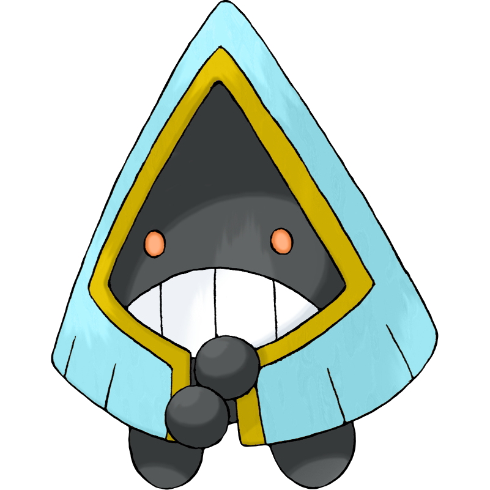

❄️Sabendo mais de Snorunt!
Nome: Snorunt
Espécie: Pokémon Ice
Tipo: Gelo
Habilidades: Inner Focus (habilidade padrão), Ice Body (habilidade oculta)
Altura média: 0,7 m
Peso médio: 16,8 kg
Idade: Varia conforme o indivíduo
Temperamento: Alegre, curioso, brincalhão e sociável
Habitat ideal: Ambientes frios, regiões nevadas e locais com temperatura controlada
Condição: Ativo, curioso e pronto para criar um vínculo com seu novo treinador
Descrição completa
Conheça o Snorunt, um pequeno e fascinante Pokémon do tipo Gelo, conhecido por sua aparência peculiar, seu traje triangular semelhante a um manto e sua afinidade natural com ambientes frios. Com seu corpo arredondado, olhos expressivos e vestimenta característica em tons de amarelo, preto e laranja, Snorunt possui uma aparência que lembra uma pequena criatura escondida dentro de um poncho de inverno. Apesar de seu tamanho relativamente pequeno, esse Pokémon apresenta uma resistência impressionante às baixas temperaturas e uma capacidade natural de viver em regiões onde outras criaturas teriam dificuldade para permanecer por longos períodos. Snorunt é conhecido por seu comportamento alegre e por sua tendência a explorar os ambientes gelados em que vive. Ele pode ser encontrado em regiões montanhosas, áreas cobertas de neve e locais onde o frio permanece constante. Sua presença está associada a paisagens invernais, nas quais consegue se movimentar com facilidade e aproveitar as condições naturais de seu habitat. Sua aparência acolhedora pode transmitir a impressão de que é uma criatura tímida, mas Snorunt também possui um lado bastante brincalhão. Ele gosta de explorar, observar novos objetos e interagir com aqueles em quem confia. Uma de suas características mais interessantes é sua afinidade com o frio. Dentro do universo Pokémon, Snorunt está adaptado a ambientes gelados e pode produzir ou manipular gelo por meio de suas habilidades especiais. Para treinadores que apreciam Pokémon diferentes, com uma aparência marcante e uma personalidade curiosa, Snorunt representa uma opção especialmente interessante.

Voltar